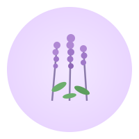
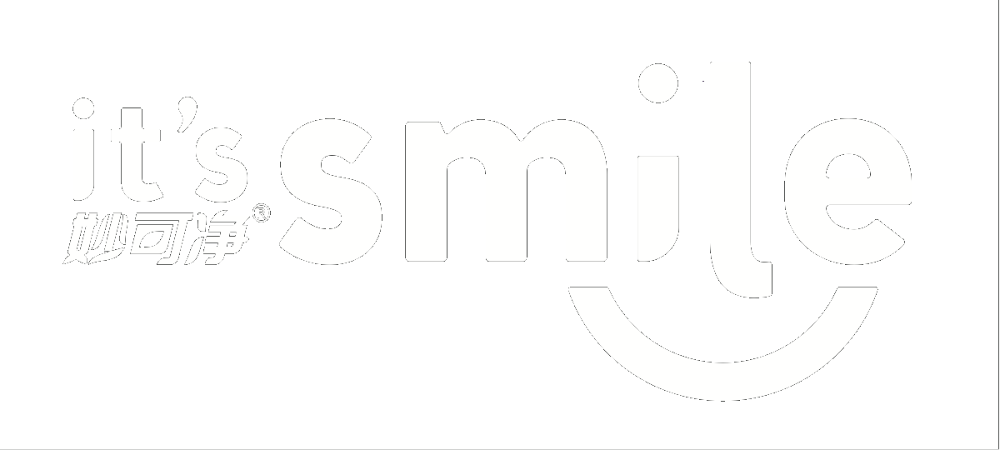

99%天然植物精萃，洗护合一，护衣如护肤
植萃洁净因子 + 蛋白酶，深入纤维去污，靶向瓦解血渍、奶渍等蛋白类污渍
深入纤维去污，温和不伤面料。天然植物萃取，安全无残留。
靶向瓦解血渍、奶渍等蛋白类污渍，轻松去除顽固污渍。
贴近人体肌肤酸碱度，温和不伤手。适合真丝、羊毛等娇贵面料。
前调柑橘 · 中调玫瑰 · 后调琥珀。尽享洗衣时刻。

源自优质茶籽，温和去污不伤面料，天然安全无刺激。

护色焕彩，锁住衣物原有色彩，洗后依然鲜亮如新。
减少纤维摩擦，衣物不易起球，保持柔软蓬松手感。
深入洁净 · 护色防缩 · 柔软蓬松
深入去渍 · 抑菌除螨 · 柔软亲肤
经第三方权威机构检测，安全无添加

99%天然植物精萃 · 洗护合一 · 护衣如护肤